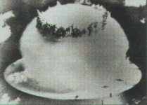
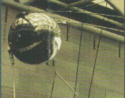
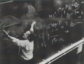
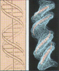

| |
|
1952
 ABD'li
doktor Jonas Salk çocuk felci aþýsýný geliþtirdi. ABD'li
doktor Jonas Salk çocuk felci aþýsýný geliþtirdi.
|
| 1952
Ýlk
hidrojen bombasý denemesi yapýldý. Büyük Okyanus'taki
Biikini atolünde gerçekleþtirilen denemede atom bombasýndan
çok daha fazla enerji açýða çýktý.

Füzyonbombasý,
termonükleer bomba ya da H bombasý olarak da bilinen
bilinen bu bombayý Edward Teller geliþtirdi.
|
| 1954
George G.
Devol, programlanabilir bir robotun patentini aldý. 1961
yýlýnda bu patentlere dayanarak Unimation firmasý
Unimate adlý ilk sanayi robotunu hizmet soktu.
|
| 1956
Bilgisayarlar
için bilimsel hesaplamaya yönelik ilk yüksek düzeyli
dil olan FORTRAN (FORmula TRANslator) geliþtirildi. Bunu
1960 yýlýnda geliþtirilen Algol 60 (Algorithmic
Language) izledi. Algol 60 kesin olarak tanýmlanmýþ ilk
programlama diliydi. Ayný yýl, yönetim konusunda
uzmanlaþmýþ bir dil olan COBOL (COmmon Business
Oriented Language) ve liste iþleme dili olan Lisp (List
processor) de kullanýlmaya baþladý. |
| 1957
 Sputnik-1
uzayda. 4 Ekim 1957'de fýrlatýlan Sputnik-1, yörüngeye
yerleþtirilen ilk uydu olmuþ ve uzay çaðýný baþlatmýþtý.
Dünya
çevresinde bir tam dolanýmýný 96 dakikada tamamlayan
Sputnik-1, 1958 yýlýnda atmosfere girerek yanmýþtý.
|
|
| 1948
Richard
Feynman, kuantum mekaniði ve elektrodinamik kuramlar üzerine
yaptýðý çalýþmalarýný tamamladý. Feynman bu çalýþmasýyla
eski kuantum elektrodinamik kuramýnýn kimi zaman
anlamsýz sonuçlara yol açan yanlarýný da çözüme
kavuþturmuþ oldu.

Ayný alanda çalýþan ABD'li
julian Schwinger ve Japon Tomonaga Siniçiro'yla
birlikte 1965 yýlýnda Nobel Fizik Ödülü'nü paylaþtý. |
| 1953
 J.
D. Watson ve F.H. C. Crick tarafýndan DNA'nýn molekül
yapýsý tanýmlandý. Bu modele göre DNA, birbiri çevresindesarýlan
iki merdivene benzer ikili sarmal biçimindeydi. Bu ikilý
sarmal, birbiri çevresinde sarýlan iki þeker-fosfat
zincirinden ve bu zincirleri birbirine baðlayan baz çiftlerinden
oluþuyordu.
|
| 1955
Owen
Chamberlain ve Emilio Segre karþýt protonu keþfetti.
Varlýðý kuramsal olarak bilinen karþýt protonu üretmek
amacýyla güçlü bir parçacýk hýzlandýrýcýsý olan
bevatron kullanan Chamberlain ve Segre, 1956'da karþýt nötronun
varlýðýný da doðruladýlar.
|
| 1958
Amerikan
Ulusal Havacýlýk ve Uzay Dairesi (NASA) kuruldu.
Ruslarýn 1957'de Sputnik uzay aracýný fýrlatmasýnýn
ardýndan ABD kongresi tarafýndan 1915 yýlýnda
kurulmuþ olan Ulusal Havacýlýk Danýþma Komitesi
çerçevesinde oluþturuldu.
|
|
|